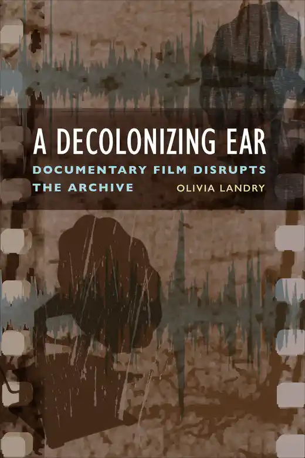

About me
I am an associate professor of German and currently the chair of Gender, Sexuality, and Women's Studies at Virginia Commonwealth University. My research broadly spans film and media as well as theater and performance studies. My first book, Movement and Performance in Berlin School Cinema, explores the contemporary film movement the Berlin School through a recalibration of the body, movement, spectacle, sensation, and spectatorship in cinema. My second book, Theatre of Anger: Radical Transnational Performance in Contemporary Berlin, examines contemporary transnational theater in Berlin through the affective-political scope of anger as an attributed and justified affect that responds to social injustice. This book presents a return to political theater and a rethinking of the novel ways in which art and resistance intersect. My third book, A Decolonizing Ear: Documentary Film Disrupts the Archive, investigates how documentary film can challenge conventions of listening and recording shaped by histories of colonial ethnography and extraction. My latest book, Cinema of Crushing Motherhood: A New Feminist Cinema, makes a bold claim for the steady emergence of a new cinema of maternity that focuses on negative affect and explores the burdens of motherhood.
I completed my Ph.D. at Indiana University in 2014. From 2014 to 2016, I was a Kenneth P. Dietrich School of Arts and Sciences postdoctoral fellow at the University of Pittsburgh. After that, I spent a year at Stanford University as the William H. Bonsall Acting Assistant Professor of German. Between 2017 and 2022, I was an assistant professor at Lehigh University. My research has been supported by grants from SSHRCC, DAAD, and the Humboldt Foundation.
Publications
Books
|  | ||
| Indiana University Press, 2018 | University of Toronto Press, 2020 | University of Toronto Press, 2022 |
| Camden House, 2024 | University of Illinois Press, 2025 |
Articles and Book Chapters
"An Ear to the Black Screen," Journal of Film and Video 78:3 (University of Illinois Press, forthcoming 2026).
"The Clown of History," in Heiner-Müller-Jahrbuch 2, ed. Norbert Otto Eke, Janine Ludwig, and Florian Vaßen (Aisthesis Verlag, forthcoming 2025).
"Whose Anger? Sibylle Berg's Theater for the Contemporary Mood," in Feminist Anger in German-Language Cultural Production: Responses to Racism, Misogyny, and Other Injustice, ed. Julia K. Gruber, Regina Range (Camden House, forthcoming 2025).
"A Cancelled Lesson in Plurality: Hannah Arendt and The Situation," Modern Drama 68:3 (University of Toronto Press, 2025): 326–349.
"Motherhood that Is Einfach anders," German Studies Review 48:2 (Johns Hopkins University Press, 2025): 67-85.
"Jewish Revenge on the German Screen," New German Critique 52:1 (154) (Duke University Press, 2025): 107-129.
"Too English? Voice, Gender, and Race from Murder! to Mary," JCMS: Journal of Cinema and Media Studies 63:5 (University of Michigan Press, 2024): 357-376.
"The Politics of the Machinic Voice in Gerd Kroske's SPK Komplex (2018)," in Transnational German Film at the End of Neoliberalism: Radical Aesthetics, Radical Politics, ed. Claudia Breger and Olivia Landry (Camden House, 2024): 102-117.
"The Circum-Mediterranean Performance of Black Bismarck," in Staging Blackness, ed. Priscilla Layne and Lily Tonger-Erk (University of Michigan Press, 2024): 261-276.
"Benjamin and the Archive Today," New German Critique: Special Anniversary Issue 50:3 (Duke University Press, 2023): 109-117.
"An Archive of Migration: The Ballhaus Naunynstraße in the 1980s," co-authored with Ela Gezen, special issue of Critical Stages/Scènes critiques, ed. Azadeh Sharifi and Ulf Otto, 27 (online 2023).
"Film as Museum: One-of-a-Kind Objects in Berkun Oya's Bir Başkadır (2020)," in The Objects of Cinema, special issue of Film-Philosophy, ed. Elizabeth Ezra and Catherine Wheatley (University of Edinburgh Press, 2023): 115-136.
"Mysteriöse Resonanz: YELLA (Christian Petzold, 2007)," in Lola, Toni, Yella und die anderen: Der deutsche Film nach 1990, ed. Corina Erk, Matteo Galli, Jörn Glasenapp (Brill Fink, 2023): 249-260.
"Exil and the Cinematic Mood of Racism," Framework: The Journal of Cinema and Media 63:1-2 (Wayne State University Press, 2022): 223-243.
"From Elif to Esty?: Unorthodox and Turkish German Cinema's Captivity Narrative," Camera Obscura 110, 37:2 (Duke University Press 2022): 119-147.
"A Gendered Suspension of Time: Waiting in the Cinema of Angela Schanelec," in Between Ambivalence and Ambition: The Politics of (Post)Feminist Film Practice in Twenty-first Century German Cinema, special issue of Feminist German Studies Yearbook, ed. Angelica Fenner and Barbara Mennel (University of Nebraska Press, 2022): 160-181.
"Clowns in Exile: Hamletmachine and the (In)human," in Germany from Outside: Rethinking Cultural History in the Age of Displacement, ed. Laurie Ruth Johnson (Bloomsbury, 2022): 323-342.
"Intimate Recordings: Mediated Acts of Touching in Future Lasts Forever and Giraffe," Studies in European Cinema (Taylor & Francis, published online 2022): 1-17.
"Schwarz tragen: Blackness, Performance, and the Utopian in Contemporary German Theater," in Minority Discourses in Germany Since 1990, ed. Ela E. Gezen, Priscilla Layne, Jonathan Skolnik (Berghahn, 2022): 99-118.
"East German Letters to Angela Davis: From Myth to Solidarities Unfolding," Feminist Media Studies 21:7 (Taylor & Francis, 2021): 1237-1252.
"Stereographic Scenography: Ersan Mondtag's (Post)Colonial Frame in De Living," Contemporary Theatre Review 30:4 (Taylor & Francis, 2020): 441-455.
"Turkish Delights with an Aftertaste: Eroticism and Necropolitics in Turkish Trans Crime Fiction," Journal of Middle East Women's Studies 16:3 (Duke University Press, 2020): 245-263.
"Crisis of Cinema/Cinema of Crisis: The Car Crash and the Berlin School," in Cinema of Crisis: Film in Contemporary Europe, eds. Thomas Austin and Angelos Koutsourakis (Edinburgh University Press, 2020): 105-118.
"The Beauty and Violence of Horror Vacui: Waiting in Christian Petzold's Transit (2018)," The German Quarterly 93:1 (Wiley-Blackwell, 2020): 90-105.
"Pre-Face, Sur-Face, Inter-Face, Post-Face: The Horror Story of Goodnight Mommy," Discourse 41:1 (Wayne State University Press, 2020): 90-111.
"Searching for a Storyteller, Remediating the Archive: Philip Scheffner's The Halfmoon Files," New German Critique 46:3 (Duke University Press, 2019): 103-124.
"Torlasco's 'Philosophy in the Kitchen': Image, Domestic Labor, and the Gendered Embodiment of Time," co-authored with Christinia Landry, New Review of Film and Television Studies 17:4 (Taylor & Francis, 2019): 1-25.
"Anger as Theatrical Form in Sasha Marianna Salzmann's Zucken," in Postdramatisches Theater als transkulturelles Theater. Eine transdisziplinäre Annäherung, eds. Teresa Kovacs and Koku G. Nonoa (Forum Modernes Theater, Tübingen: Narr Francke Attempo Verlag, 2018): 335-348.
"On the Politics of Love and Trans-Migrant Theater in Germany," TSQ: Transgender Studies Quarterly 5:1 (Duke University Press, 2018): 30-48.
"Color/blindness and Sheri Hagen's Auf den zweiten Blick," Black Camera: An International Journal 9:1 (Indiana University Press, 2017): 62-79.
"A Body without a Face: The Disorientation of Trauma in Phoenix (2014) and New Holocaust Cinema," Film-Philosophy 21:2 (Edinburgh University Press, 2017): 188-205.
"'Don't Panic I'm Islamic': Voicing Resistance through Documentary," in Framing Islam: Faith Fascination, and Fear in Twenty-First-Century German Culture, special issue of Colloquia Germanica, eds. Anna Faye Stewart and Heidi Dorothea Denzel, 47:1-2 (A. Franke Verlag, 2014): 83-106. (appeared 2017)
"Greek Dispossession Staged, or When Street Politics Meets the Theater," TRANSIT: A Journal of Travel, Migration and Multiculturalism in the German-speaking World 10:2 (online, 2016).
"Jewish Joke Telling in Muttersprache Mameloschn: Performing Queer Intervention on the German Stage," Women & Performance: A Journal of Feminist Theory 26:1 (Taylor & Francis, 2016): 36-54.
"'Wir sind alle Oranienplatz!' Space for Refugees and Social Justice in Berlin," in The New Berlin, special issue of Seminar: A Journal of Germanic Studies, eds. Karin Bauer and Jennifer Hosek, 51:4 (University of Toronto Press, 2015): 398-413.
"Dance and the Theatricality of Berlin School Cinema," The Germanic Review: Literature, Culture, Theory 89:1 (Taylor & Francis, 2014), 1-19.
"German Youth Against Sarrazin: Nurkan Erpulat's Verrücktes Blut and Clash as Political Theatre of Experience," in 51 Jahre türkische Gastarbeitermigration in Deutschland, special issue of Jahrbuch Türkisch-deutsche Studien 3, eds. Seyda Ozil, Michael Hofmann, Yasemin Dayıoglu-Yücel, (Vandenhoeck & Ruprecht, 2012), 105-121.
"Verbal Performance in Dorothea Tieck's Translation of Shakespeare's Sonnets," Women in German Yearbook 28, eds. Margaret Lamb-Faffelberger and Elizabeth Ametsbichler, (University of Nebraska Press, 2012), 1-22.
Short essays
"Listening Back: A Return to A Decolonizing Ear: Documentary Film Disrupts the Archive," Seminar: A Journal of Germanic Studies, 61:1 (University of Toronto Press, 2025): 21-24.
"Rethinking Migration: The Intervention of Theater," in Forum: Migration, The Germany Quarterly, ed. Carl Niekerk, 90:2 (Wiley Press, 2017): 222-224.
Courses Taught at VCU
German Language (Intermediate)
German Communication and Composition
German Conversation and Film
Seminar in Media, Art, and Text: Documentary Media (Graduate)
Text and Context: Displacement and Exile